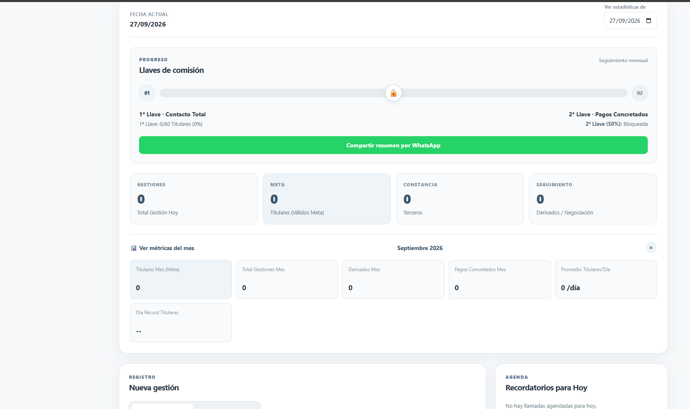
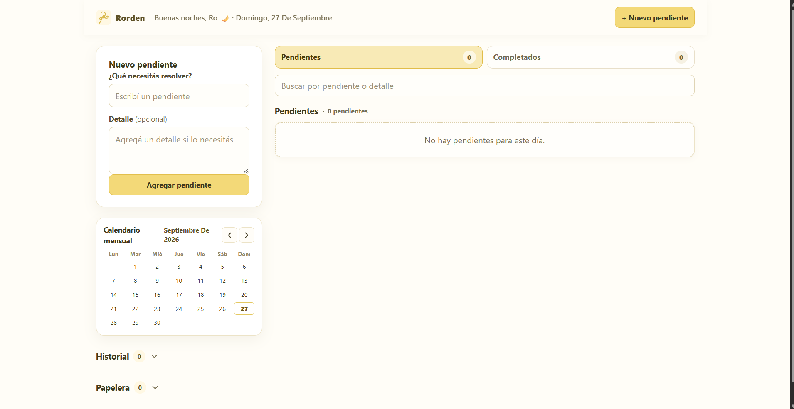
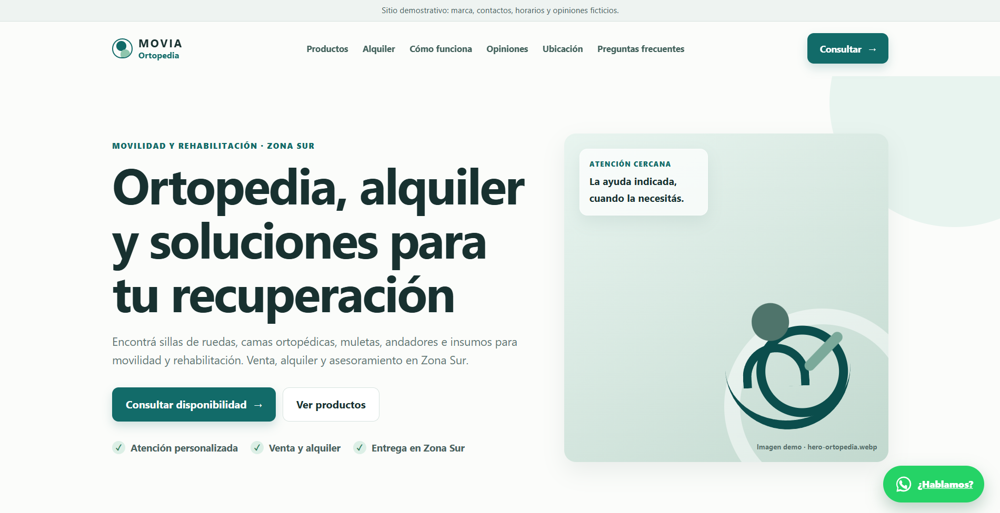

NATIVA Estética
Una presencia digital clara para presentar servicios, ordenar la información y facilitar el contacto.
Conocer el caso
PROYECTOS
Una selección de proyectos para clientes, productos propios y demos desarrolladas por NODO.
CLIENTES
Una presencia digital clara para presentar servicios, ordenar la información y facilitar el contacto.
Conocer el caso
PRODUCTOS PROPIOS
Un sistema para registrar actividad, ordenar información y hacer seguimiento de trabajo.
Ver proyecto completo
Una herramienta para reunir agenda, tareas, notas, finanzas y objetivos en un mismo espacio.
Ver proyecto completo
Una herramienta simple para anotar, organizar y resolver pendientes con claridad.
Abrir proyecto
DEMOS
Una demostración de cómo podría resolverse una presencia digital para productos, alquiler y consultas.
Demo conceptual. No corresponde a un cliente real.
Ver proyecto completo

Contanos qué necesitás y vemos cuál puede ser la mejor forma de empezar.
Contanos tu proyecto